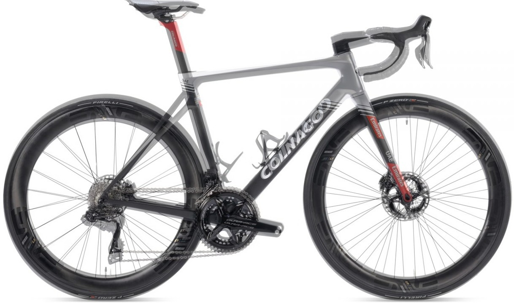
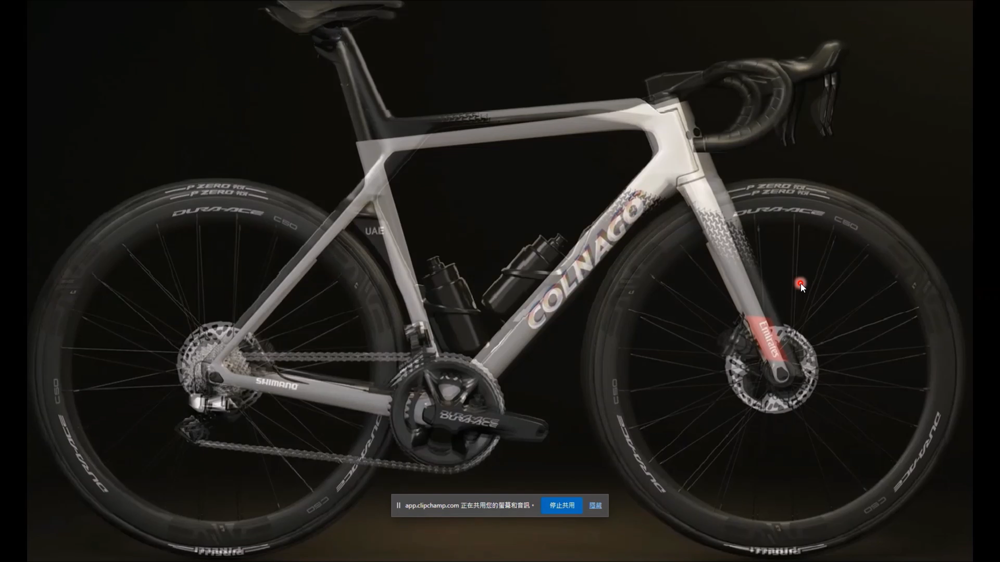
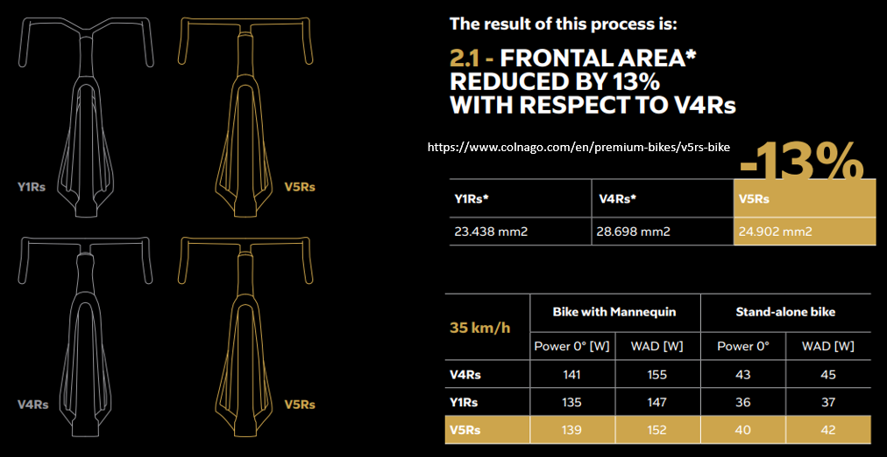
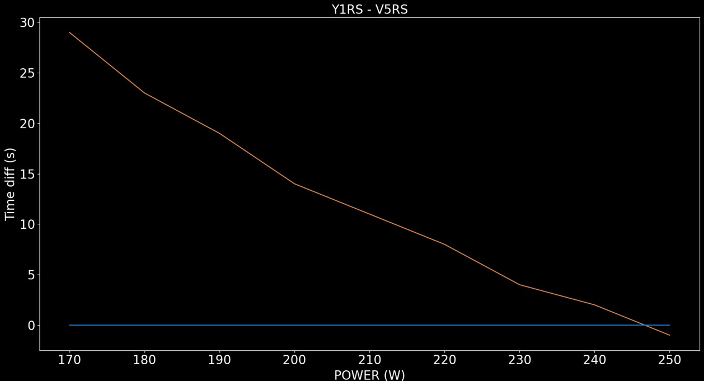
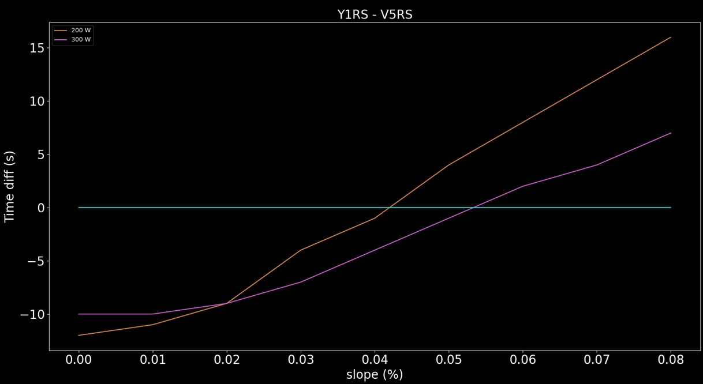

V5RS 與 Y1RS 和 V4RS 的差異 V5RS 與 Y1RS 爬坡會差多少
Colnago今年也升級了 V4RS 推出 V5RS 了，重量當然是比 V4RS 還要輕，不過早半年的 Y1RS 則是比較重，雖然 V4RS 在 TOUR 雜誌的數據不怎麼樣，但Colnago 之前本來就沒有空力車的產品線，這次的 Y1RS 剛好就把這部分補足了。畢竟騎乘的人可是拿下多次環法冠軍，以及多個古典賽冠軍和世界冠軍的人，所以即便數據差價錢高還是會有人買單。
一、V5RS 與 V4RS 的幾何差異
|  |
|---|
| 圖一：V4RS 與 V5RS 差異 |
首先一樣來看看與前一代的幾何差異，上管白色的是新的，黑色則是舊的，可以看到新的上管變得稍微水平一點，且後上叉也往上拉了一點，與現在的趨勢相反，而座管角度也變得稍微傾斜一點，剛好這兩個就是對坐起來的感覺，起到一正一負的作用，所以要騎了才知道是軟是硬，當然前叉角度也變得更直，操縱起來會更靈敏，當然拖曳距也變得更短，這應該是差最多的部分。
表一：幾何數據差異
| V5RS | V4RS | |
|---|---|---|
| Reach (mm) | 384 | -1 |
| Head angle (deg) | 72.3 | +0.8 |
| Seat angle (deg) | 74.8 | +0.3 |
| Head tube (mm) | 127 | +3 |
| Fork offset (mm) | 47 | -0.4 |
| Trail | 59.5 | +4.1 |
二、Y1RS 與 V4RS 的幾何差異
雖然用眼睛看就知道跟 V4RS 差很多，但還是不免俗地把兩台車疊再一起看，可以看到前叉的部分粗壯了非常多，座管下方也變成貼著後輪的彎曲形狀，像 S5 和 Foil 也有類似的設計，不然就是做得很粗然後把靠近輪子的地方挖空。不過 Y1RS 則是將這部分分開，所以車架重量會比其他空力車在輕一點，除了變粗以外也變得稍微有點尖，畢竟是空力車而且騎乘者瓦數又大，所以多了這點設計可以在高速下省下更多瓦。另外一個就是把手的設計也改了很多，可以看到與傳統的平整面差了很多，不再與把手在同個平面上變的立體。而為什麼有人會說競爭者是 S5 呢，可以看到與 S5 的把手只差在那個水平面，反正現在 UCI 也不允許手肘放在手把上，所以少了那個部分對目前規則來說也沒影響。
|  |
|---|
| 圖二：V4RS 與 Y1RS 差異 |
三、三台車重量與風阻面積的差異
在來看看官方自己的宣稱，V5RS 是在 Y1RS 大約後半年發表，所以在一些設計方面也有參考 Y1RS，就前叉的設計來講風阻面積是比 V4RS 小，雖然也不是很多 畢竟時速 50 也只少 9 瓦，如果是時速 35 就只有少 4 瓦而已，普通人的話大概就 2~3 瓦。
表二：三台車子車架組重量差
| 車架 (g) | 前叉 (g) | 差異 (g) | |
|---|---|---|---|
| Y1RS | 965 | 450 | 0 |
| V4RS | 798 | 375 | -242 |
| V5RS | 685 | 324 | -388 |
而官方也有釋放出一張雷達圖，來說明這兩台車分別擅長的部份，Y1RS 就是完全的空力取向，V5RS 則是偏向全能車。雖然官方將重量講的好像很輕，不過大家都知道 V4RS 在爬坡車，甚至是全能車比較中算很重的，只是相較於 Y1RS 是比較輕而已。
|  |
|---|
| 圖三：三台車子車架風阻面積差異 |
四、V5RS 與 Y1RS 爬坡差異
這邊就假設兩台車都用相同裝備，重量差來自車架組 坐管與把手，這邊是假設 V5RS 輕了 400 g 去計算，時間是用 Y1RS 的減去 V5RS，負的表示 Y1RS 較快，反之是 V5RS。一樣先來看台灣人最常爬的西進武嶺，如果是這兩台車比的話 V5RS 優勢還是有的，但是因為重量差異沒有很多，所以如果你是國手等級，那麼騎 Y1RS 就有可能比較快。
|  |
|---|
| 圖六：Y1RS 與 V4RS 爬武嶺差異 |
在來看看在什麼坡度 V4RS 才有優勢，如果你在某個爬坡路段有 300 W，那騎 Y1RS 在 5% 以內的坡度就會比較快，沒那麼厲害的車友大概就是 4% 以內。
|  |
|---|
| 圖七：Y1RS 與 V4RS 爬坡差異 |
Y1RS 算是 Colnago 第一台空力車產線，看起來就是從現有的空力車品牌，東取一點西拿一點拼湊起來，且相信選空力車的車友，很大一部分是因為外觀。但 Y1RS 設計感覺太前衛了，像是一台專門為 Pogacar 設計的車，不過感覺主力還是會在 V 系列，畢竟大家在空力與重量都有所提升，如果這部分沒提升的話還有誰會買，總不可能期待 Pogacar 每年都拿環法冠軍。